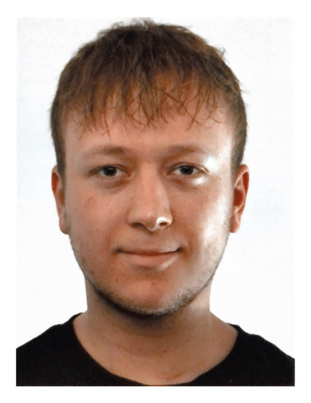

Elia Baisch
Design · Development · Management
Mailbaischelia@gmx.de
Phone+49 1575 1991315
LocationSchillerstraße 7, 72829 Engstingen, Germany
Portfoliobaischelia.github.io
GitHubgithub.com/BaischElia
LinkedInlinkedin.com/in/elia-baisch

Media informatics student at the intersection of design, software development and management — from UI/UX design and prototyping to test automation, RPA and data analysis in industrial environments.
Education
M.Sc. Computer Science and Media — Stuttgart Media University (HdM)
2026 – PresentM.Sc. Media Informatics — University of Tübingen
2025 – 2026Transferred to Stuttgart Media University to continue in Computer Science and Media.
B.Sc. Mobile Media — Stuttgart Media University (HdM)
10/2021 – 07/2025Focus: interface design, mobile and web development, image processing, 3D.
Abitur, Design and Media Technology — Kerschensteinerschule, Reutlingen
09/2018 – 07/2021Professional Experience
Working Student — Order Engineering
02/2026 – PresentWeinmann Holzbausystemtechnik GmbH
- General support in order engineering for timber construction systems
- Technical analysis of order and component data
- Data management and data evaluation
- Automation of recurring operational workflows using Excel and VBA
Intern — IT Test Management, Test Automation & RPA
09/2023 – 03/2024Hugo Boss AG, Metzingen
- Support in test management across the software release cycle
- Review, validation and administration of test data
- Preparation and support of release phases
- Test automation with Tricentis Tosca; robotic process automation with UiPath
Core Skills
- Design & UX
- Figma, Adobe Creative Suite, UI/UX design, prototyping, user research
- Development
- HTML, CSS, JavaScript, Python, C#, C++, Git
- Automation & QA
- Tricentis Tosca, UiPath, RPA, test management, Excel and VBA
- Analysis
- Technical analysis, data evaluation, data management
Elia BaischCurriculum Vitae — Page 2
Selected Projects
Image Processing Toolkit
2026- Hybrid images, Laplacian pyramid fusion, auto white balance, photo mosaic and gradient-based image forensics — Python (NumPy, OpenCV, PyTorch), ported to run in the browser with JavaScript and the Canvas API
Portfolio Website & Browser Tools
2026- Bilingual, responsive site built from scratch in HTML, CSS and JavaScript, including client-side tools for image compression, format conversion and QR poster generation
VST3 Audio Plugins
2025- Three audio effect plugins with JUCE, C++ and CMake — digital signal processing, host synchronisation, custom plugin interfaces
SustainAppility — UI/UX Concept
2025- Mobile app interface making product sustainability visible via barcode scan; full design process from user research to an interactive high-fidelity prototype in Figma, in a team of six
Further Experience
Retail Operations (part-time)
03/2025 – 10/2025Sonderpreis Baumarkt, Engstingen
- Customer consulting, inventory and warehouse management, checkout and cash reconciliation
Seasonal Work — Logistics
07/2021 – 08/2021 · 08/2022 – 09/2022Robert Bosch GmbH, Reutlingen
- Warehouse and materials handling in an industrial production environment
Tools & Technologies
- 3D & CAD
- Blender, Shapr3D, Vectorworks, Unity, 3D modelling and printing
- Image processing
- NumPy, OpenCV, PyTorch, Canvas API
- Audio
- JUCE, digital signal processing, CMake
- Ways of working
- Cross-functional teamwork, project coordination, process optimisation, MS Office
Languages
German — native
English — B2
French — A1